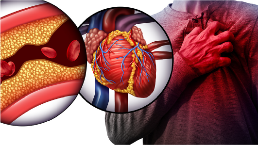

Touching lives, one patient at a time.
Providing all our best. Because Your Life Matters. Fast, friendly and accurate care for you
24/7 Emergency Hotline
+91 9911 2336 11 |
Touching lives, one patient at a time. Providing all our best. Because Your Life Matters. Fast, friendly and accurate care for you |
24/7 Emergency Hotline +91 9911 2336 11 |
 |
|
Cardiothoracic surgeons are specialized medical experts in delivering routine to complex surgeries related to the heart, lungs, esophagus, and other organs in the chest. Cardiothoracic surgeons specialize in operating on the upper part of the abdomen. Whereas general cardiac surgeons are experts in dealing with heart-related issues only. Cardiothoracic surgeons are also called cardiovascular surgeons.
Vascular surgery is the medical study or surgical subspecialty that deals with diseases related to the vascular system or circulation system outside the body. Vascular surgeons treat and diagnose veins, arteries, and lymphatic circulation in every part of the body except the brain and heart. Vascular surgeons at Kamineni Hospitals are highly skilled and experienced in offering medical therapy, minimally invasive catheters, and surgical reconstruction procedures. They also work with other physicians to address vascular-related issues to provide the most effective treatment for patients.
|
INFINITE HOSPITALS |